①
②
③
④
⑤
| 점수 | 세부기준 |
|---|---|
| 5점~0점 | 한 문항이 맞을 때마다 1점씩 획득 |
정답
10,000[A]
5,000[A]
2,500[A]
부분점수
| 점수 | 세부기준 |
|---|---|
| 6점 | (1), (2), (3)번이 모두 맞은 경우 6점 획득 |
| 2점 | (1), (2), (3)번 중 한 문항이 맞을 때마다 2점 획득 |
해설
| 공칭 방전전류 | 설치장소 | 조건 |
|---|---|---|
| 10,000[A] | 변전소 | ・154[kV] 이상의 계통 ・66[kV] 및 그 이하의 계통에서 뱅크용량이 3,000[kVA]를 초과하거나 특히 중요한 곳 ・장거리 송전선 케이블(배전선로 인출용 단거리 케이블은 제외) ・배전선로 인출 측(배전 간선 인출용 장거리 케이블은 제외) |
| 5,000[A] | 변전소 | 66[kV] 및 그 이하에서 Bank 용량이 3,000[kVA] 이하인 곳 |
| 2,500[A] | 선로 | 배전선로 |
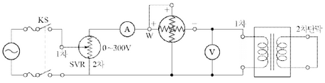
정답 ①
정답 ②
정답 ④
0[V]
1차 정격전류
임피던스 와트
1차 정격전압
| 점수 | 세부기준 |
|---|---|
| 8점 | (1), (2), (3), (4)번이 모두 맞은 경우 8점 획득 |
| 2점 | (1), (2), (3), (4)번 중 한 문항이 맞을 때마다 2점 획득 |
① LOAD: 입력 A접점(신호)
② LOAD NOT: 입력 B접점(신호)
③ AND: AND A 접점
④ AND NOT: AND B 접점
⑤ OR: OR A 접점
⑥ OR NOT: OR B 접점
⑦ OB: 병렬접속점
⑧ OUT: 출력
| STEP | 명령 | 번지 |
|---|---|---|
| 0 | LOAD | P000 |
| 1 | OR | P010 |
| 2 | AND NOT | P001 |
| 3 | AND NOT | P002 |
| 4 | OUT | P010 |
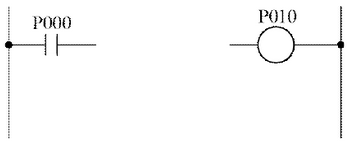
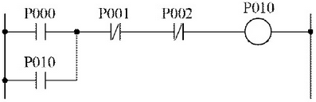
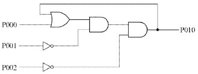
| 점수 | 세부기준 |
|---|---|
| 6점 | (1), (2) 문항이 모두 정답인 경우 6점 획득 |
| 3점 | (1), (2)번 중 한 문항만 정답일 경우 3점 획득 |
시퀀스 제어회로 관련 PLC 프로그램 언어와 래더 다이어그램을 이용하여 무접점 논리회로로 변환하는 문제이다. 반대로 무접점 논리회로를 PLC 래더 다이어그램이나 프로그램 언어로도 변환이 가능하도록 연습해야 한다.
PLC(Programmable Logic Controller) 프로그램을 “래더 다이어그램”으로 변환
LOAD P000: 처음 입력으로 P000의 a접점을 연결한다.
OR P010: 앞의 입력에 병렬로 P010의 a접점을 연결한다.
AND NOT P001: 앞의 입력에 직렬로 P001의 b접점을 연결한다.
AND NOT P002: 앞의 입력에 직렬로 P002의 b접점을 연결한다.
OUT P010: 앞의 입력에 직렬로 출력 P010을 연결한다.
PLC(Programmable Logic Controller) 프로그램을 “무접점 논리회로”로 변환
1단계: (1)에서 구한 PLC 래더도를 논리식으로 변환
\[ P010 = (P000 + P010) \cdot \overline{P001} \cdot \overline{P002} \]
2단계: 1단계에서 구한 논리식을 논리회로로 변환한다. 여기서 주의할 점은 출력 P010이 입력으로도 사용되었는데 이것은 출력이 다시 입력으로 피드백(Feedback)된 것이다.
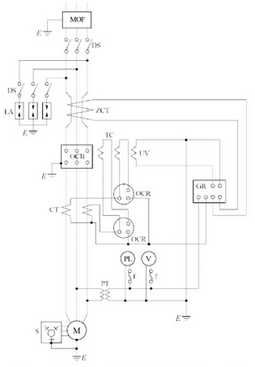
계전기용 변류기는 차단기의 전원 측에 설치하는 것이 바람직한 이유를 쓰시오. 정답
본 도면에서 생략할 수 있는 부분을 쓰시오. 정답
진상 콘덴서에 연결하는 방전코일의 설치목적을 쓰시오. 정답
도면에서 다음의 명칭을 각각 쓰시오. 정답
해설) 단순 암기형 / 난이도 中
보호범위를 넓히기 위해서이다.
LA용 DS
콘덴서에 축적된 잔류전하를 방전하다.
도면에서 명칭 쓰기
| 점수 | 세부기준 |
|---|---|
| 13점 | (1), (2), (3), (4)번이 모두 맞은 경우 13점 획득 |
| 3점 | (1)번이 맞으면 3점 획득 |
| 3점 | (2)번이 맞으면 3점 획득 |
| 3점 | (3)번이 맞으면 3점 획득 |
| 4점~2점 | (4)번이 모두 맞으면 4점 획득, 1개만 맞으면 2점 획득 |
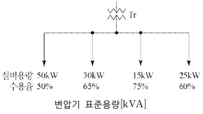
변압기 표준용량 [kVA]
| 25 | 30 | 50 | 75 | 100 | 150 |
|---|
[계산과정]
해설) 단순 계산형 / 난이도 下
정답
[계산과정]
\[ 변압기 용량 ≥ 합성 최대 전력 = \frac{\text{설비용량} \times \text{수용률}}{\text{부등률} \times \text{역률}} [kVA] \]
\[ 변압기 용량 = \frac{50 \times 0.5 + 30 \times 0.65 + 15 \times 0.75 + 25 \times 0.6}{1.2 \times 0.8} = 73.69 \]
정답 75[kVA] 선정
부분점수
| 점수 | 세부기준 |
|---|---|
| 5점 | 계산과정과 정답이 모두 맞은 경우 5점 획득 |
| 0점 | 계산과정이나 정답에 오류가 있는 경우 0점 |
| 계통의 공칭전압 [kV] | 정격전압 [kV] | 정격차단시간 [Cycle] |
|---|---|---|
| 22.9 | ① | ④ |
| 154 | ② | ⑤ |
| 345 | ③ | ⑥ |
정답
① 25.8, ② 170, ③ 362, ④ 5, ⑤ 3, ⑥ 3
부분점수
| 점수 | 세부기준 |
|---|---|
| 6점~0점 | 1문항이 맞을 때마다 1점씩 획득 |
해설
| 계통의 공칭전압[kV] | 6.6 | 22.9 | 66 | 154 | 345 |
|---|---|---|---|---|---|
| 정격전압[kV] | 7.2 | 25.8 | 72.5 | 170 | 382 |
| 정격차단시간[Cycle] | 5 | 5 | 5 | 3 | 3 |
[조건]
사용전선의 고유저항은 1/55 [\(\Omega \cdot mm^2/m\)]이다.
전선의 굵기는 2.5, 4, 6, 16, 25, 35, 70, 90[mm²] 이다.
[계산과정]
해설) 복합 계산형 / 난이도 중
정답
[계산과정]
\[ P_i = 6,000 \times 0.1 \times \frac{1}{2} = 300 \text{ [kW]} \]
\[ R = \frac{P_i V^2 \cos^2 \theta}{p^2} = \frac{(300 \times 10^3) \times (30 \times 10^3)^2 \times 0.8^2}{(3000 \times 10^3)^2} = 19.2 \text{ [Ω]} \]
\[ \therefore A = \frac{1}{55} \times \frac{30 \times 10^3}{19.2} = 28.41 \text{ [mm²]} \]
정답 35[mm²] 선정
부분점수
| 점수 | 세부기준 |
|---|---|
| 5점 | 계산과정과 정답이 모두 맞은 경우 5점 획득 |
| 0점 | 계산과정이나 정답에 오류가 있는 경우 0점 |
해설
문제에서 주어진 고유저항의 단위가 [Ω·mm²/m]이기 때문에 전선의 길이는 [m]로, 전선의 단면적은 [mm²] 단위로 계산하여야 하는 것을 주의해야 한다.
1회선당 전력손실 = 2회선의 전력손실 $ $
[계산과정]
3상 부하의 피상전력 S는 다음과 같이 계산됩니다.
\[ S = \frac{P}{cos\theta} = \frac{40kW}{0.75} = \frac{160}{3} kVA \]
승압기 2대를 병렬로 연결하면, 각 승압기의 피상전력은 전체 피상전력의 절반이 됩니다. 따라서, 1대의 승압기 용량은 다음과 같습니다.
\[ S\_{single} = \frac{S}{2} = \frac{160}{6} kVA \approx 26.67 kVA \]
따라서, 1대의 승압기는 약 26.67 kVA의 용량을 사용해야 합니다.
정답 약 26.67 kVA
해설) 단순 계산형 / 난이도 中
[계산과정]
승압된 전압 계산
\[ V_h = (1 + \frac{1}{a})V_l = (1 + \frac{1}{3000}) \times 3000 = 3210 [V] \]
자기 용량 = $부하용량 = = 4.03 [kVA] $
승압기 1대의 용량 = \(\frac{4.03}{2}\) = 2.02 [kVA]
정답 2.02[kVA]
부분점수
| 점수 | 세부기준 |
|---|---|
| 5점 | 계산과정과 정답이 모두 맞은 경우 5점 획득 |
| 0점 | 계산과정이나 정답에 오류가 있는 경우 0점 |
해설
단권변압기 V결선(승압용)
변압기 1대의 등가용량: $P_1 = el_2 = (V_2 - V_1)I_2 $
변압기 2대의 등가용량: \(P_2 = 2P_1 = 2el_2 = 2(V_2 - V_1)I_2\)
3상 부하용량:$ P = V_2I_2$
자기용량 =$ = $
광속 발산도 \(R = \frac{I\tau}{r^2(1-\rho)}\) [rlx]
| 점수 | 세부기준 |
|---|---|
| 4점 | 공식을 정확하게 작성하면 4점 획득 |
| 0점 | 공식에 오류가 있으면 0점 |
조도 $E = [lx] $
글로브 효율 \(\eta = \frac{\tau}{1-\rho}\)
I: 광도, \(\rho\): 반사율, \(\tau\): 투과율, r: 반지름
위 공식을 이용하여 글로브에서의 광속발산도는 다음과 같이 구할 수 있다.
\[ R = \eta E = \frac{\tau}{1-\rho} \cdot \frac{I}{r^2} = \frac{\tau I}{r^2(1-\rho)} [rlx] \]
()
[계산과정]
콘덴서의 정격전류(정상시 전류)를 \(I_{nom}\) 이라고 하고, 직렬 리액터를 설치한 후의 전류를 I 라고 하자. 직렬 리액터의 용량이 콘덴서 용량의 11%이므로, 리액터의 임피던스는 콘덴서 임피던스의 11%라고 볼 수 있다. 따라서, 전류는 다음과 같이 계산할 수 있다.
\[ I = \frac{I\_{nom}}{\sqrt{1 + (0.11)^2}} = \frac{10}{\sqrt{1 + 0.0121}} \approx \frac{10}{\sqrt{1.0121}} \approx 9.94 [A] \]
따라서, 콘덴서 투입 시의 전류는 약 9.94 [A]가 된다.
9.94 [A]
(그림이 없음)
[계산과정]
콘덴서 투입 시 돌입전류 계산
\[ I = I_c \times \left( 1 + \sqrt{\frac{X_c}{X_L}} \right) = 10 \times \left( 1 + \sqrt{\frac{1}{0.11}} \right) = 40.15 [A] \]
정답 40.15[A]
| 점수 | 세부기준 |
|---|---|
| 4점 | 계산과정과 정답에 오류가 없으면 4점 획득 |
| 0점 | 계산과정과 정답에 오류가 있으면 0점 |
[이유]
해설) 단순 계산형 + 단답 암기형 / 난이도 中
[계산과정]
\[ R_E = \frac{1}{2} \times (86 + 80 - 156) = 5 [\Omega] \]
정답 5[Ω]
[적합여부] 적합
[이유] 고압 및 특고압에 시설하는 피뢰기의 접지저항은 10[Ω] 이하여야 한다.
| 점수 | 세부기준 |
|---|---|
| 6점 | (1), (2)번이 모두 정답인 경우 6점 획득 |
| 3점 | (1), (2)번 중 한 문제만 정답인 경우 3점 획득 |
$ RE + R_a = R{Ea}$ … ①
$ Ra + R_b = R{ab}$ … ②
$ Rb + R_E = R{bE}$ … ③
$ (① + ② + ③) × $ 로 계산하면 다음 식이 성립된다.
\[ R*E + R_a + R_b = \frac{1}{2}(R*{Ea} + R*{ab} + R*{bE}) \]
④ - ② 하면 다음 식이 성립된다.
\[ R*E = \frac{1}{2}(R*{Ea} + R*{bE} - R*{ab}) = \frac{1}{2}(86 + 80 - 156) = 5 [\Omega] \]
변압기 표준 용량 [kVA]
| 30 | 50 | 75 | 100 | 150 | 200 | 300 |
|---|
[계산과정]
해설: 단순 계산형 / 난이도 중
[계산과정]
정답 75[kVA]
부분점수
| 점수 | 세부기준 |
|---|---|
| 4점 | 계산과정과 정답이 모두 맞은 경우 4점 획득 |
| 0점 | 계산과정과 정답 중 오류가 있는 경우 |
접근 POINT
변압기 용량은 피상전력 [VA]로 표시한다. 따라서 각 부하의 유효전력 [W]과 무효전력 [Var]을 구하여 벡터합으로 부하 피상전력을 구한다.
해설
전열기의 역률이 주어지지 않는 경우 역률은 1로 계산한다. (순수 저항 부하로 간주) 따라서 전체 무효전력 = 전동기의 무효전력이다.
무효전력 = 유효전력 × tanθ = 유효전력 × \(\frac{\sqrt{1 - cos^2\theta}}{cos\theta}\) (θ: 역률각)
변압기 용량은 계산값을 초과하는 가장 작은 값으로 표에서 선정한다.
[조건]
차단기 명판(Name plate)에 BIL 150 [kV], 정격 차단전류 20 [kA], 차단 시간 8사이클, 솔레노이드(Solenoid)형이라고 기재되어 있다. (단, BIL은 절연계급 20호 이상의 비유효 접지계에서 계산하는 것으로 한다.)
[계산과정]
[계산과정]
기준 충격 절연 강도
차단기의 정격 전압 계산
[계산 과정]
\(BIL = \text{절연계급} \times 5 + 50 [kV]\) 에서
\[ \text{절연계급} = \frac{BIL - 50}{5}, \text{절연계급} = \frac{\text{공칭전압}}{1.1} \]
\(\text{공칭전압} [kV] = \text{절연계급} \times 1.1\) 이다.
\[ 차단기의 정격전압 V_n = \frac{BIL - 50}{5} \times 1.1 \times \frac{1.2}{1.1} = \frac{150 - 50}{50} \times 1.1 \times \frac{1.2}{1.1} = 24 [kV] \]
정답 24 [kV]
[계산 과정]
정격 차단 용량
\[ P_s = \sqrt{3} V_n I_n = \sqrt{3} \times 24 \times 20 = 831.38 [MVA] \]
정답 831.38 [MVA]
| 점수 | 세부 기준 |
|---|---|
| 6점 | (1), (2), (3)번이 모두 맞은 경우 6점 획득 |
| 2점 | (1), (2), (3)번 중 한 문제를 맞힐 때마다 2점 획득 |
기준 충격 절연 강도 BIL (Basic Impulse Insulation Level)란 기기나 설비 등의 절연이 그 기기에 가해질 것으로 예상하는 충격 전압에 견디는 강도이다. 이 값은 뇌 임펄스 내전압 시험값으로서 절연 레벨의 기준을 정하는 데 적용된다.
\[ BIL = \text{절연계급} \times 5 + 50 [kV] \]
절연 계급은 기기나 설비 등의 절연 강도 계급, 전기 기기의 절연 강도를 표시하는 계급이다.
\[ \text{절연계급} = \frac{\text{공칭전압} [kV]}{1.1} \]
공칭 전압 (Nominal Voltage): 전선로를 대표하는 선간 전압
정격 전압 (Rated Voltage): 기계 기구 선로 등에서 정상적인 동작 상태를 유지할 수 있는 전압
| 차단기의 정격 전압 [kV] | 사용 회로의 공칭 전압 [kV] | BIL [kV] |
|---|---|---|
| 0.6 | 0.1, 0.2, 0.4 | 45 |
| 3.6 | 3.3 | 60 |
| 7.2 | 6.6 | 150 |
| 24.0 | 22.0 | 350 |
| 72.5 | 66.0 | 750 |
| 170 | 154.0 |
\[ \text{정격전압} = \text{공칭전압} \times \frac{1.2}{1.1} \]
[과전류 차단기 용량]
\[ \text{기준용량} = \sqrt{3} \times \text{공칭전압} \times \text{정격전류} \]
\[ \text{단락용량} = \sqrt{3} \times \text{공칭전압} \times \text{단락전류} = \frac{100}{ \%Z} P_n \]
\[ \text{차단용량} = \sqrt{3} \times \text{정격전압} \times \text{정격차단전류} (여기서, 정격차단전류 ≥ 단락전류) \]
[계산과정]
오차 = 측정값 - 참값 = 1.0092[V] - 1.0183[V] = -0.0091[V]
정답 -0.0091[V]
[계산과정]
\[ 오차율 = \frac{\text{오차}}{\text{참값}} \times 100\% = \frac{-0.0091}{1.0183} \times 100\% \approx -0.893\% \]
정답 -0.893%
[계산과정]
보정값 = 참값 - 측정값 = 1.0183[V] - 1.0092[V] = 0.0091[V]
정답 0.0091[V]
[계산과정]
\[ 보정률 = \frac{\text{보정값}}{\text{측정값}} \times 100\% = \frac{0.0091}{1.0092} \times 100\% \approx 0.901\% \]
정답 0.901%
정답 해설) 복합 계산형 / 난이도 下
[계산과정]
\[ 오차 = 측정값 - 참값 = 1.0092 - 1.0183 = -0.0091 \]
정답 -0.0091
[계산과정]
\[ 오차율 = \frac{오차}{참값} = \frac{-0.0091}{1.0183} = -0.0089 \]
정답 -0.0089
[계산과정]
\[ 보정(값) = 참값 - 측정값 = 1.0183 - 1.0092 = 0.0091 \]
정답 0.0091
[계산과정]
\[ 보정률 = \frac{참값 - 측정값}{측정값} = \frac{0.0091}{1.0092} = 0.0090 \]
정답 0.0090
부분점수
| 점수 | 세부기준 |
|---|---|
| 4점 | 1문항을 맞힐 때마다 1점씩 획득 |
해설
다음 공식만 알고 있으면 쉽게 풀 수 있는 문제이다.
참값 = 오차 - 측정값
\[ 오차율 = \frac{측정값 - 참값}{참값} \times 100 [%] \]
보정값 = 참값 - 측정값
\[ 보정률 = \frac{참값 - 측정값}{측정값} \times 100 [%] \]
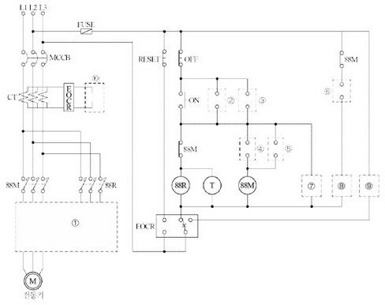
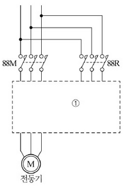
정답 | 구분 | ② | ③ | ④ | ⑤ | ⑥ | |—|—|—|—|—|—| | 접점 및 기호 | | | | | |
| 구분 | ⑦ | ⑧ | ⑨ | ⑩ |
|---|---|---|---|---|
| 그림기호 |
예시)
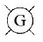
: 정지,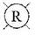
: 기동 및 운전,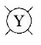
: 과부하로 인한 정지[계산과정]
[계산과정]
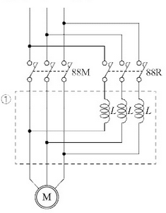
| 구분 | ② | ③ | ④ | ⑤ | ⑥ |
|---|---|---|---|---|---|
| 접점 및 기호 | 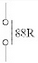 |
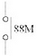 |
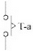 |
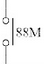 |
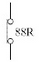 |
| 구분 | ⑦ | ⑧ | ⑨ | ⑩ |
|---|---|---|---|---|
| 그림기호 | 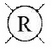 |
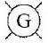 |
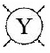 |
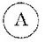 |
[계산과정] 정격전류를 I*n 이라 하면 직입기동 시 기동전류 I = \(6I_n\)
65[%]탭으로 기동하면 기동전류는 전압에 비례해서 \(I*{ss}' = 0.65 \times 6I_n = 3.9I_n\) 이 된다.
정답 $3.9I_n $
[계산과정] 정격토크를 \(\tau_n\) 이라 하면 직입기동시 기동토크 \(\tau_s = 2\tau_n\)
토크는 전압의 제곱에 비례한다.
\[ \tau_s' = (0.65)^2 \times 2\tau_n = 0.85\tau_n \]
\[ [정답] 0.85\tau_n \]
| 점수 | 세부기준 |
|---|---|
| 13점 | (1)~(5)번이 모두 맞은 경우 13점 획득 |
| 5점 | 문항 (1)의 주회로가 정답이면 4점, 오류가 있으면 0점 |
| 3~0점 | 문항 (2)의 소문항 5개 중 정답이 0~1개면 0점, 2~3개면 2점, 5개면 3점 부여 |
| 3~0점 | 문항 (3)의 소문항 4개 중 정답이 0~1개면 0점, 2~3개면 2점, 4개면 3점 부여 |
| 2점 | 문항 (4), (5)의 계산과정과 답이 맞으면 각각 1점씩 획득 |
기동을 위해 PB-ON 시에 88R 계전기가 여자되어 먼저 작동하고 타이머의 설정 시간 후 88M 계전기가 동작하므로 기동용 리액터는 88R 쪽에 직렬로 설치한다. 농형 유도전동기의 경우 권선형 유도전동기처럼 외부 저항을 연결할 수 없기 때문에 전압을 줄여서(감전압) 기동특성을 제어한다. 이때 기동전류는 인가전압에 비례(\(I_{ss} \propto V\))하고, 기동토크는 인가전압의 제곱에 비례(\(\tau_s \propto V^2\))한다.
[3상 유도전동기 기동법]
① 농형: 직입 기동, Y-△ 기동, 리액터 기동, 기동 보상기법 ② 권선형: 2차 저항 기동법, 게르게스 기동법
[리액터 기동법]
① 동작 원리
\[ \]
{kind=link}